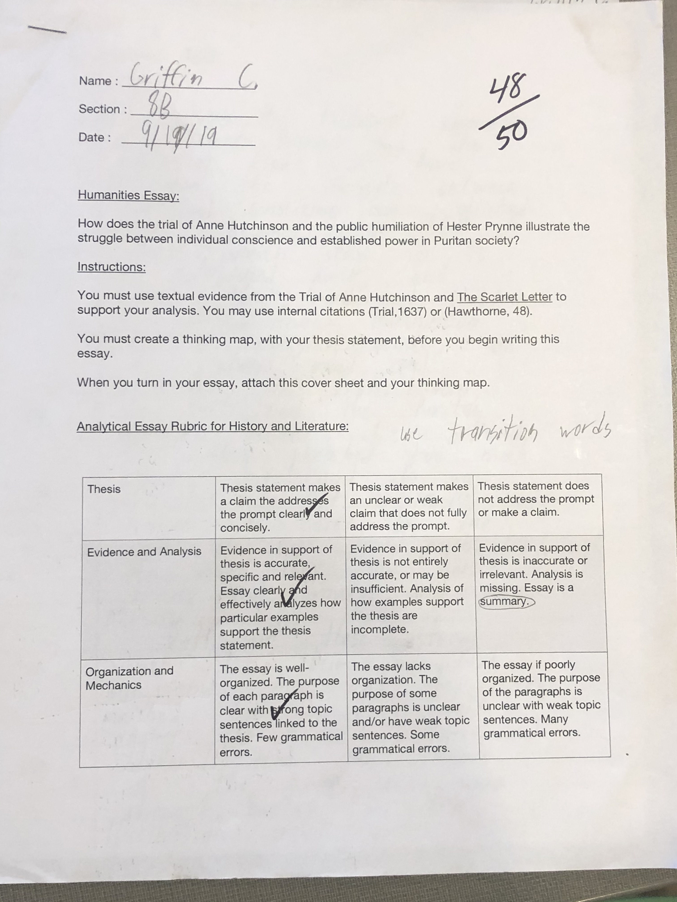

This essay represents my strength: my love of reading. This helped me to analyze The Scarlet Letter and the documents from the Trial of Anne Hutchinson. I wrote a satisfactory essay, and was happy with my work.

My Hester Prynne/Anne Hutchinson Essay Home Page